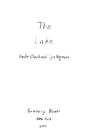
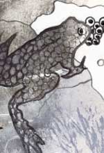
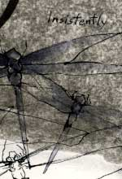
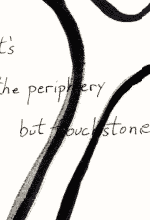
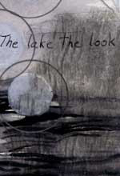
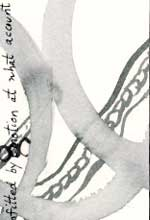

The Lake
a collaboration
by:
Lyn Hejinian and Emilie Clark
Working Note
In October of 1999, we spent a week together on Lake Wentworth, New Hampshire. Our intention was to begin work on a collaboration that would require us to work in each other’s medium as well are our own. We wanted to attempt a work that was site-specific and also time-specific. Our previous collaboration, The Traveler and the Hill and the Hill (Granary Books, 1998) had evolved over the course of several years, and for most of that time we had worked on our respective parts separately, and this time we wanted to explore the possibilities and problems of a collaboration in real time. Indeed, “exploration” was to be one of the themes of the work, and in retrospect the work can be seen as a study of an ecosystem, in which the lake figures both as a literal and a metaphorical landscape. Language and visual imagery were the ecological elements in the system of the work, as the various material forms above, around, and below the lake’s surface were in that of the site. We were interested in the interrelationships, simultaneities, and the extents of layers; we were thinking about complex emotional and aesthetic terrains along with the literal one we were investigating. We imagined the lake as a site and described such a site being constituted by all possible responses to it. We worked from early morning to late at night, taking breaks to walk along the lakeshore or go out into the lake in a kayak, photographing along the way (the rolls of film were developed at a one-hour photo processing shop in the nearest town). At the end of the week we found we had a sequence of pages that we felt together comprised a work. Naturally, we called it “The Lake.”
—Lyn Hejinian and Emilie Clark
|
|
||
|  |  |  |
|  |  |  |
"The
Lake has been reprinted with the generous permission of
Granary Books."
Bio: Lyn Hejinian is the author of The Beginner, The Cold of Poetry, The Cell, Writing is an Aid to Memory, and Oxota. Other collaborations include Sight with Leslie Scalapino, "The Wide Road" with Carla Harryman, and Leningrad with Michael Davidson, Ron Silliman and Barrett Watten. Her collection of essays, The Language of Inquiry, was recently published by University of California Press. A new work entitled A Border Comedy is soon to be published by Granary Books.
Bio: Emilie Clark is an artist who lives in New York city. She co-edits Shark with Lytle Shaw and has undertaken a number of collaborations with Lyn Hejinian including The Traveler and the Hill and the Hill and Predella.